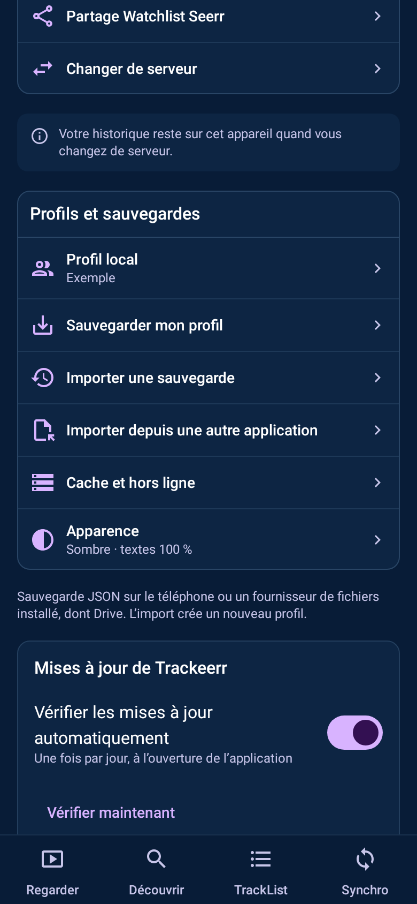

Guide · Android 8.0 et plus · Trackeerr 0.6.54
Votre suivi,
pas à pas.
Installer l’application
- Depuis Télécharger, récupérez l’APK de la dernière version sur la Release officielle GitHub.
- Ouvrez le fichier depuis votre navigateur ou vos téléchargements. Si Android le demande, autorisez cette source à installer une application.
- Confirmez l’installation, puis ouvrez Trackeerr. Vous pouvez ensuite désactiver l’autorisation d’installation de cette source.
Pour une mise à jour, installez toujours par-dessus l’application existante. Ne désinstallez pas : cela effacerait les données locales. Si Android refuse la signature, vérifiez que le fichier vient bien de la Release officielle et que votre installation précédente est compatible.
L’empreinte SHA-256 du fichier est affichée sur le site et dans les notes de version. La signature Android identifie l’éditeur lors d’une mise à jour ; une empreinte publiée sur le même site ne constitue pas, à elle seule, une preuve indépendante de son authenticité.
Connecter Jellyfin et Seerr
Vous avez besoin d’un compte Jellyfin et d’une instance Seerr reliée au même serveur, avec la connexion Jellyfin activée. Trackeerr ne fournit aucun contenu ni serveur, et ne demande aucun compte Trackeerr.
- Renseignez les adresses finales des deux services, y compris leur sous-chemin éventuel.
- Utilisez votre compte Jellyfin. Les autorisations de votre serveur restent appliquées.
- Choisissez ou créez votre profil local. Lancez ensuite Synchro → Vérifier et synchroniser pour établir la comparaison.
Privilégiez HTTPS et un certificat valide. HTTP reste possible pour un réseau local de confiance, après confirmation explicite ; il ne chiffre pas les identifiants transmis. Un accès distant peut nécessiter le VPN ou la configuration fournis par votre administrateur.
Retrouver et suivre vos médias
- Regarder rassemble notamment les médias à reprendre, du dernier visionnage au plus ancien. Un média commencé reste suivi même s’il est absent de Jellyfin ; la progression concerne le film ou l’épisode affiché.
- Découvrir propose catalogue, recherche, tris et filtre Favoris. Lorsqu’un texte est saisi, le tri porte sur les résultats chargés, sans prétendre classer tout le catalogue distant.
- TrackList regroupe À venir, À voir, Vu et Abandon. La recherche peut être étendue aux autres onglets.
Sur une affiche suivie, le cœur modifie le favori et l’œil le statut Vu. Hors WatchList, le marque-page permet d’ajouter le média. Dans une fiche, vous retrouvez les trois états, le synopsis, le casting et les recommandations ; un artiste ouvre sa fiche et sa filmographie triable.
Pour une série, Tout vu s’applique aux épisodes ordinaires diffusés ou réellement disponibles en avance. Les spéciaux et épisodes futurs indisponibles sont exclus. Une nouveauté diffusée non vue retire la complétion lorsque son catalogue est actualisé. Les numérotations trouées après fusion d’épisodes sont prises en compte.
Pour arrêter un suivi sans perdre l’historique : touchez le marque-page actif, puis Abandonner le suivi. Le marque-page barré permet de reprendre le suivi ou de retirer le média. Abandonner ne remet pas les épisodes à zéro.
Le libellé Jellyfin cyan indique une disponibilité confirmée ; Jellyfin barré indique une absence confirmée ; À vérifier correspond à une disponibilité encore inconnue. Le lien Jellyfin d’un média disponible et le logo TMDB ouvrent leur fiche respective.
Comprendre la synchronisation et le cache
Les choix sont d’abord conservés sur le téléphone. Synchro → Vérifier et synchroniser compare les services, traite les envois et conflits, met à jour les disponibilités et complète les descriptions des médias suivis. La dernière étape ne précharge pas les images.
Vu et Favori échangent avec Jellyfin lorsqu’une correspondance est confirmée. Le partage de WatchList avec Seerr est réglable dans Profil. L’abandon du suivi reste local au profil. Les épisodes importés sans identité sûre restent locaux jusqu’à leur rapprochement.
Les confirmations et modifications non envoyées sont conservées en cas de coupure. Consultez Suivi des envois pour reprendre ; ne réimportez pas tout votre historique à chaque interruption. Les réponses en cache s’affichent en priorité, puis se réactualisent selon les réglages. Une donnée encore inconnue n’est pas assimilée à une absence.
Dans une fiche, Tout actualise l’ensemble, Statuts cible les états et Fiche les descriptions et images. Les demandes Seerr tiennent compte de Jellyfin : un film déjà présent n’est pas proposé, et seules les saisons encore manquantes restent éligibles.
Importer un ancien historique
- Ouvrez Profil → Importer depuis une autre application.
- Copiez le prompt proposé. Si nécessaire, convertissez votre export avec l’outil ou l’IA de votre choix ; aucun fichier n’est transmis automatiquement par Trackeerr.
- Importez le JSONL obtenu et lisez le bilan. Les statuts vrais sont fusionnés sans écraser les autres états.
- Dans Synchro → Détails et réglages → Médias non identifiés, rapprochez les titres restants. Enchaîner prépare les prochains choix ; Choix uniques permet de traiter les correspondances simples.
Vérifiez l’affiche et le synopsis avant de lier un média. Le lien conserve l’historique et ses flags ; il ne signifie pas que le média existe sur Jellyfin. Pour les épisodes d’une série identifiée, les coordonnées saison/numéro sont utilisées, sans imposer l’égalité des titres.
Un export d’historique contient des données personnelles : ne le publiez pas dans un ticket GitHub. Si vous le confiez à une IA, choisissez ce service et ses conditions de confidentialité en connaissance de cause.
Profils, sauvegardes et apparence
Profil → Sauvegarder mon profil produit un JSON sans mot de passe, jeton ni cookie. Il contient votre historique : conservez-le dans un emplacement de confiance. Le JSON n’est pas chiffré. Importer une sauvegarde crée un nouveau profil et ne remplace pas les profils existants.
Les réglages d’apparence permettent notamment d’ajuster les textes, la taille et la transparence des icônes, les affiches, les espacements et les animations. Les saisons entièrement vues sont cyan ; le soulignement indique toujours la saison sélectionnée. L’onglet des épisodes spéciaux peut être masqué.
Recevoir les mises à jour sans Play Store
Dans Profil → Mises à jour de Trackeerr, activez Vérifier les mises à jour automatiquement pour une vérification à l’ouverture, au maximum une fois par période de 24 heures. La fréquence est fixe ; l’option est désactivée au départ. Le bouton Vérifier maintenant est placé juste dessous et fonctionne indépendamment.
Le contrôle lit un petit catalogue public HTTPS hébergé par GitHub, sans compte, adresse de serveur, identifiant d’appareil ni historique. Il ne bloque pas les écrans et ne lance aucune tâche permanente en arrière-plan. Une erreur conserve l’application utilisable.
Si une version plus récente compatible est annoncée, Trackeerr propose le téléchargement officiel. Votre navigateur télécharge l’APK ; Android confirme son installation et vérifie sa signature. Trackeerr n’installe rien silencieusement et ne demande pas la permission d’installer elle-même des paquets.

Obtenir de l’aide
Avant de signaler un problème, notez la version de Trackeerr, le modèle du téléphone, la version Android et les étapes pour reproduire. Les diagnostics proposés par l’application masquent les secrets ; relisez néanmoins tout fichier avant de le partager.
Pour un bug ordinaire, utilisez les tickets publics. Pour une vulnérabilité, suivez la politique de sécurité : utilisez le signalement privé s’il est disponible, ou demandez un contact privé sans exposer le problème dans un ticket public.
Crédits
Captures natives de démonstration : médias et images fictifs, sans données de catalogue ni compte réel. Certaines captures de présentation précèdent cette livraison ; les détails visuels peuvent évoluer.
Inter : SIL Open Font License, licence. Icône Jellyfin : Jellyfin contributors, source, CC BY-SA 4.0 ; adaptation native avec dégradé violet/cyan ou teinte neutre. Logos Seerr et TMDB : projets respectifs. Ce produit utilise les données TMDB, sans être approuvé ni certifié par TMDB.